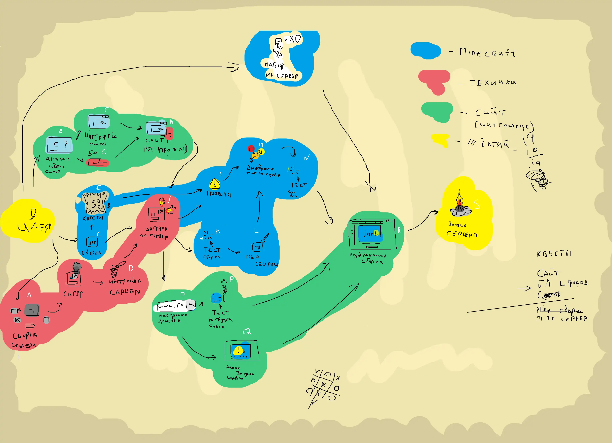
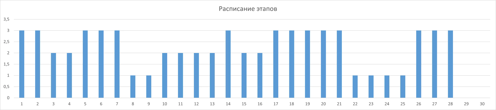

Дорожная карта

Дорожная карта проекта разделена на 4 основыне области создания:
Работа с сборкой и модификациями, Работа с сервером и
Работа на стороне интерфейса для пользователей.
Описание
Сервер майнкрафт — открытое сообщество для многопользовательской игры.
Мы создаём бесплатный сервер с модификациями для разнообразия.
План поможет структурировать задачи, цели и настройку серверов.

Всего над проектом работает 3 человека, следовательно и все задачи распределяются
на 3 человек.
Этапы
A. Сборка сервера: подбор и сбор комплектующих сервера;
B. Анализ идеи сайта: просмотр и анализ существующих сайтов;
C. Сборка модификаций: комплект модификаций для игры майнкрафт;
D. Настройка сервера: настройка трафика, установка ПО и прочих утилит;
E. Квесты: создание структуры и систем наград за выполнение задач;
F. Интерфейс сайта: планирование и создание пользовательского интерфейса сайта;
G. БД (База Данных): создание базы данных для пользователей сайта;
H. Регистрации для сайта: создание системы регистрации и авторизации для сайта с последующей фильтрацией трафика пользователей на сервер;
I. Загрузка на сервер: публикация всего сделанного на сервер;
J. Написание правил сервера майнкрафт: написание игровых правил;
K. Тестирование сборки модификаций: тестирование работоспособности и оптимизации игровой сборки;
L. Редактирование сборки модификаций: исправление проблем и добавление или удаление модификаций;
M. Внедрение систем администрирования: внедрения контроля соблюдения внутри игровых правил;
N. Тестирование системы администрирования и безопасности сервера: проверка администраторов сервера и безопасности игрового и реального сервера;
O. Покупка и настройка домена для игрового и реального сервера: приобретение и последующая настройка домена для упрощения доступа;
P. Тестирование нагрузки сайта: тестируется возможная нагрузка пользователей на сайт;
Q. Анонс запуска сервера: анонсирование скорого запуска сервера;
R. Публикация сборки модификаций: публикация готовой сборки модификаций на сайт;
S. Запуск сервера в общий доступ: открытие сервера для пользователей.